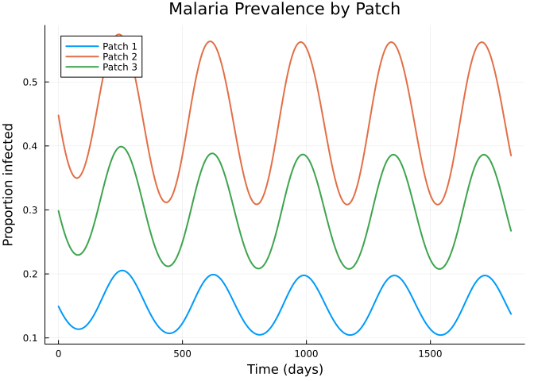
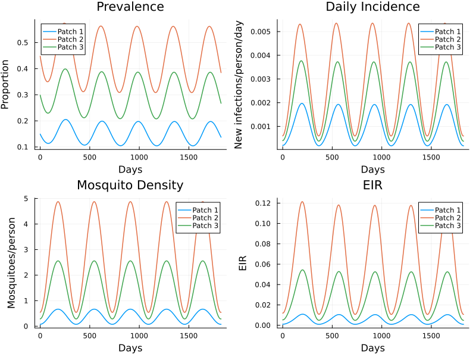

Malaria Metapopulation Model
Simon Frost
- Overview
- Helper functions
- Define the Malaria module
- Running the model
- Prevalence dynamics
- Four-panel dashboard
- Summary
Overview
Not all models in Starsim need to be agent-based. This vignette implements a compartmental (ODE) malaria model as a Starsim module, demonstrating how the framework supports non-agent-based components.
The model is a multi-patch Ross-Macdonald system with: - Seasonal mosquito density forcing (sinusoidal) - Human mobility between patches - Euler integration within the Starsim timestep loop
This follows code/malaria_demo/demo_sim_ss.py.
Helper functions
using Starsim
using LinearAlgebra
using Plots
function analytical_mosquito_density(ivector, hvector, pij, a, b, c, mu, r, tau)
xvector = ivector ./ r
gvector = xvector .* r ./ (1 .- xvector)
n = length(xvector)
fvector = zeros(n)
for i in 1:n
k_i = sum(pij[:, i] .* xvector .* hvector) / sum(pij[:, i] .* hvector)
fvector[i] = b * c * k_i / (a * c * k_i / mu + 1)
end
fmatrix = Diagonal(fvector)
cvector = (pij * fmatrix) \ gvector
m = cvector .* mu ./ a^2 ./ exp(-mu * tau)
return m
end
function seasonal_sinusoidal(t; amplitude=0.8, peak_day=180)
day_of_year = t % 365
return max(0.0, 1 + amplitude * sin(2π * (day_of_year - peak_day + 365/4) / 365))
endseasonal_sinusoidal (generic function with 1 method)Define the Malaria module
mutable struct MalariaODE <: AbstractModule
mod::ModuleData
# Bionomic parameters
a::Float64 # Biting rate
b::Float64 # Mosquito-to-human transmission
c::Float64 # Human-to-mosquito transmission
r::Float64 # Recovery rate
mu::Float64 # Mosquito death rate
tau::Float64 # Extrinsic incubation period
# Patch data
numpatch::Int
hvector::Vector{Float64} # Population sizes
ivector::Vector{Float64} # Initial incidence
pij::Matrix{Float64} # Mobility matrix
m_base::Vector{Float64} # Baseline mosquito density
# Compartment state
X::Vector{Float64} # Prevalence per patch
C::Vector{Float64} # Cumulative incidence per patch
end
function MalariaODE(;
name::Symbol = :malaria,
a = 0.3, b = 0.1, c = 0.214,
r = 1/150, mu = 1/10, tau = 10.0,
hvector = [5000.0, 10000.0, 8000.0],
ivector = [0.001, 0.003, 0.002],
pij = [0.85 0.10 0.05;
0.08 0.80 0.12;
0.06 0.09 0.85],
)
md = ModuleData(name; label="Malaria ODE")
n = length(hvector)
MalariaODE(md, a, b, c, r, mu, tau,
n, copy(hvector), copy(ivector), copy(pij),
zeros(n), zeros(n), zeros(n))
end
Starsim.module_data(m::MalariaODE) = m.mod
function Starsim.init_pre!(m::MalariaODE, sim)
md = m.mod
md.t = Timeline(start=sim.pars.start, stop=sim.pars.stop, dt=sim.pars.dt)
npts = md.t.npts
results = Result[]
for i in 1:m.numpatch
push!(results, Result(Symbol("X_$i"); npts=npts, label="Prevalence (Patch $i)", scale=false))
push!(results, Result(Symbol("C_$i"); npts=npts, label="Cum. incidence (Patch $i)", scale=false))
push!(results, Result(Symbol("daily_inc_$i"); npts=npts, label="Daily incidence (Patch $i)", scale=false))
push!(results, Result(Symbol("m_seasonal_$i"); npts=npts, label="Mosquito density (Patch $i)", scale=false))
push!(results, Result(Symbol("eir_$i"); npts=npts, label="EIR (Patch $i)", scale=false))
end
define_results!(m, results...)
md.initialized = true
return m
end
function Starsim.init_post!(m::MalariaODE, sim)
m.m_base = analytical_mosquito_density(
m.ivector, m.hvector, m.pij,
m.a, m.b, m.c, m.mu, m.r, m.tau,
)
m.m_base = max.(m.m_base, 1e-10)
m.X .= m.ivector ./ m.r
m.C .= 0.0
return m
end
function Starsim.step!(m::MalariaODE, sim)
md = m.mod
t = md.t.start + (md.t.ti - 1) * md.t.dt
dt = md.t.dt
X = m.X
H = m.hvector
pij = m.pij
n = m.numpatch
# Seasonal mosquito density
ms = m.m_base .* seasonal_sinusoidal(t)
# Weighted prevalence at each destination
k = (pij' * (X .* H)) ./ (pij' * H)
# Force of infection
Z_numer = m.a^2 * m.b * m.c * exp(-m.mu * m.tau) .* k
Z_denom = m.a * m.c .* k .+ m.mu
dC = pij * (ms .* Z_numer ./ Z_denom) .* (1 .- X)
dX = dC .- m.r .* X
# Euler update
m.X .+= dX .* dt
m.C .+= dC .* dt
return m
end
function Starsim.update_results!(m::MalariaODE, sim)
md = m.mod
ti = md.t.ti
t = md.t.start + (ti - 1) * md.t.dt
n = m.numpatch
for i in 1:n
md.results[Symbol("X_$i")][ti] = m.X[i]
md.results[Symbol("C_$i")][ti] = m.C[i]
end
# Derived quantities
X = m.X; H = m.hvector; pij = m.pij
ms = m.m_base .* seasonal_sinusoidal(t)
k = (pij' * (X .* H)) ./ (pij' * H)
Z_numer = m.a^2 * m.b * m.c * exp(-m.mu * m.tau) .* k
Z_denom = m.a * m.c .* k .+ m.mu
dC = pij * (ms .* Z_numer ./ Z_denom) .* (1 .- X)
Z = m.a * m.c .* k .* exp(-m.mu * m.tau) ./ (m.a * m.c .* k .+ m.mu)
eir = ms .* m.a .* (pij * Z)
for i in 1:n
md.results[Symbol("daily_inc_$i")][ti] = dC[i]
md.results[Symbol("m_seasonal_$i")][ti] = ms[i]
md.results[Symbol("eir_$i")][ti] = eir[i]
end
return m
end
function Starsim.finalize!(m::MalariaODE)
return m
endRunning the model
mal = MalariaODE()
sim = Sim(
modules = mal,
n_agents = 1,
start = 0.0,
stop = 365.0 * 5,
dt = 1.0,
verbose = 0,
)
run!(sim)Sim(1 agents, 0.0→1825.0, dt=1.0, nets=0, dis=0, status=complete)Prevalence dynamics
npts = sim.t.npts
tvec = 0:npts-1
patches = ["Patch 1", "Patch 2", "Patch 3"]
p = plot(xlabel="Time (days)", ylabel="Proportion infected",
title="Malaria Prevalence by Patch")
for (i, name) in enumerate(patches)
prev = get_result(sim, :malaria, Symbol("X_$i"))
plot!(p, tvec, prev, lw=2, label=name)
end
p
Four-panel dashboard
p1 = plot(title="Prevalence", xlabel="Days", ylabel="Proportion")
p2 = plot(title="Daily Incidence", xlabel="Days", ylabel="New infections/person/day")
p3 = plot(title="Mosquito Density", xlabel="Days", ylabel="Mosquitoes/person")
p4 = plot(title="EIR", xlabel="Days", ylabel="EIR")
for (i, name) in enumerate(patches)
plot!(p1, tvec, get_result(sim, :malaria, Symbol("X_$i")), label=name, lw=1.5)
plot!(p2, tvec, get_result(sim, :malaria, Symbol("daily_inc_$i")), label=name, lw=1.5)
plot!(p3, tvec, get_result(sim, :malaria, Symbol("m_seasonal_$i")), label=name, lw=1.5)
plot!(p4, tvec, get_result(sim, :malaria, Symbol("eir_$i")), label=name, lw=1.5)
end
plot(p1, p2, p3, p4, layout=(2, 2), size=(800, 600))
Summary
- Starsim supports non-agent-based modules via the generic
moduleskeyword - The Ross-Macdonald model uses Euler integration within the Starsim timestep loop
- Seasonal mosquito forcing creates annual cycles in prevalence, incidence, and EIR
- Multi-patch mobility allows infection to spread between populations
- This approach enables coupling ODE models with agent-based components in the same simulation